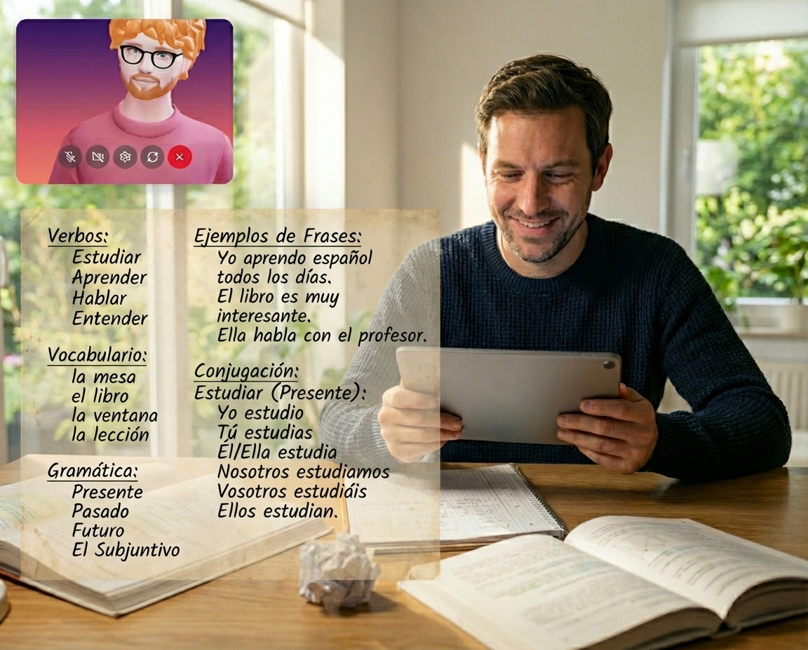

Lade deine eigenen Materialien hoch oder lass dir von der KI einen massgeschneiderten Sprachkurs erstellen. Egal ob Zeitungsartikel, Liedtexte oder Schulbücher.
Rundum-Training
Übe Vokabeln, Grammatik, Sprechen und Schreiben auf jedem Niveau (A1-C2). Die KI passt sich deinem Tempo an und korrigiert dich sanft.

Echte Konversationen
Führe natürliche Gespräche im Voice-Modus. Verbessere deine Aussprache und verliere die Angst vor dem Sprechen in einer sicheren Umgebung.
Kultureller Kontext
Lerne nicht nur Wörter, sondern auch Redewendungen und kulturelle Besonderheiten kennen, damit du dich wie ein Local fühlst.